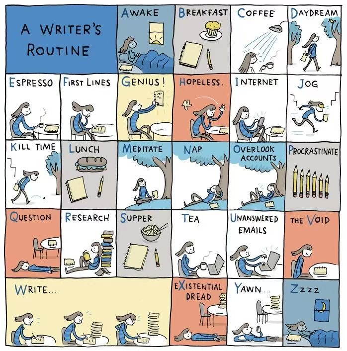
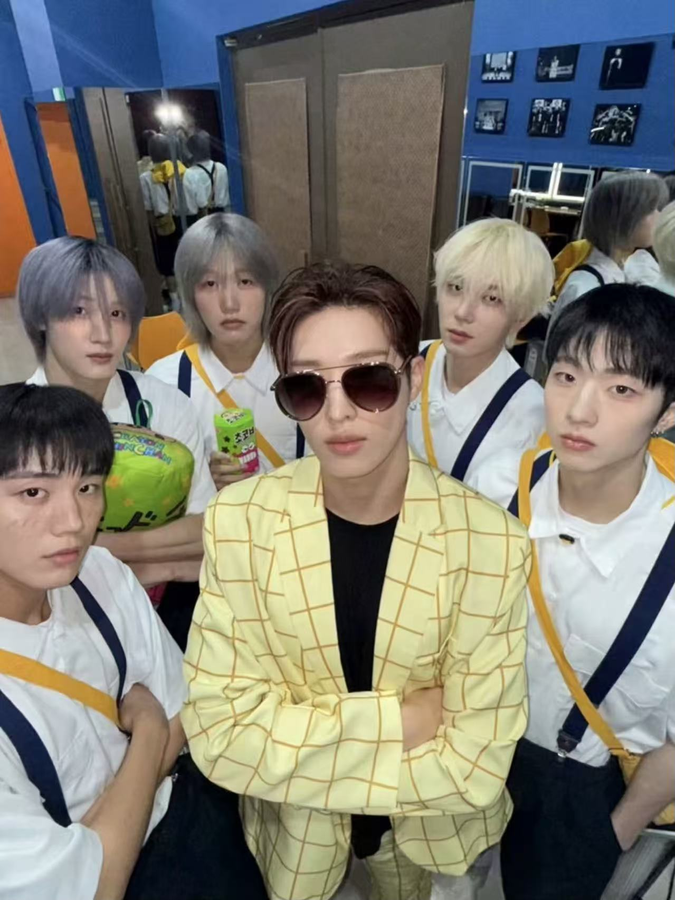

Welcome in!
This website is about three big things that enrich my daily life!
Explore the page and share your thoughts with me ;)
Get startedFeatures
In my name, the Chinese character "笑(xiao)" means "smile". Do you know what makes me smile?
Comfort Hobby: Reading Books
I'm a passionate book lover and a sincere writer. I feel the purest joy and solace when I rub the rough pages and immerse myself in the fascinating stories in the book world.
I have a Wechat official account to record my book reviews and receive insightful opinions from other readers.
Comfort Food: Rice Cakes
I love eating and enjoy trying different recipes, but my favorite food is probably rice cakes. I think rice cakes are delicious no matter how they are prepared.
My love for rice cakes comes from the sweet memory of my grandparents making freshly cooked rice cakes for me when I was little.
Comfort Music: P1Harmony
I appreciate P1Harmony's visuals, their music that I will never get tired of listening to, and the members' adorable personalities.
My bias in the group is JONGSEOB🐯
Featured Content
The three elements always remind me to immerse in life, to reflect and to create, stepping closer to my dream life of becoming a writer and accomplishing what I want to achieve.

Secondary Content
🌍 On Earth We're Briefly Gorgeous
Check the 25 books I've read in the past year 2025!
My yearly pick is [On Earth We're Briefly Gorgeous] by Ocean Vuong.
🎵 DUH!
Listen to this P1Harmony's song that demonstrates their unique attitude!
Who's that it's me, DUH!

Want to see more?
Chapter Two
Feel free to view my other articles and follow my account!
Stir-Fried Rice Cakes (Nian Gao)
Please see this rice cake recipe! What do you want to cook when you have time?